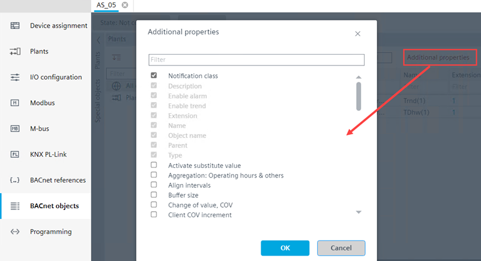

附加属性
将其他属性作为列添加到 BACnet 对象视图中的对象表中。附加属性显示以下条目：
- All properties of the object types defined for the selected device
- The properties of the default columns cannot be removed
- Only 16 user defined properties are supported. A warning is displays with the OK button disabled, if more than 16 additional properties are checked
- Use the filter option to filter properties in the Additional properties dialog box.
